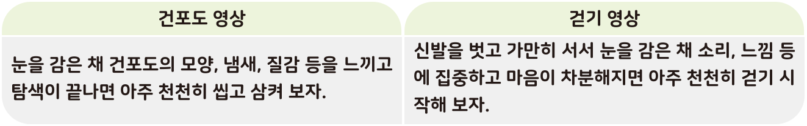
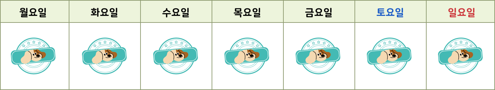

활동하기 교실 속 마음 챙김
● 다음은 교실에서 마음 챙김을 실천할 수 있는 명상 방법이다. 직접 실천해 보고 물음에 답해 보자.

1 마음 챙김을 하기 전과 후의 내 마음 상태가 어떻게 다른지 써 보고, 친구의 경험은 어땠는지 함께 이야기해 보자.
마음 챙김 명상을 하기 전에는 마음이 불안했는데 명상을 하고 나니 마음이 차분해지는 것을 느꼈다.
2 마음이 불안할 때 평정심을 찾을 수 있도록 도와주는 문장을 만들어 보자.
예시 이 또한 지나가리라.
• 지금, 이 순간에 집중! 집중! 집중!
3 위에서 만든 마음 챙김 문장을 일상생활에서 마음 챙김이 필요한 순간에 떠올려 보고, 마음 챙김을 성공한 날은 도장에 색칠해 보자.
